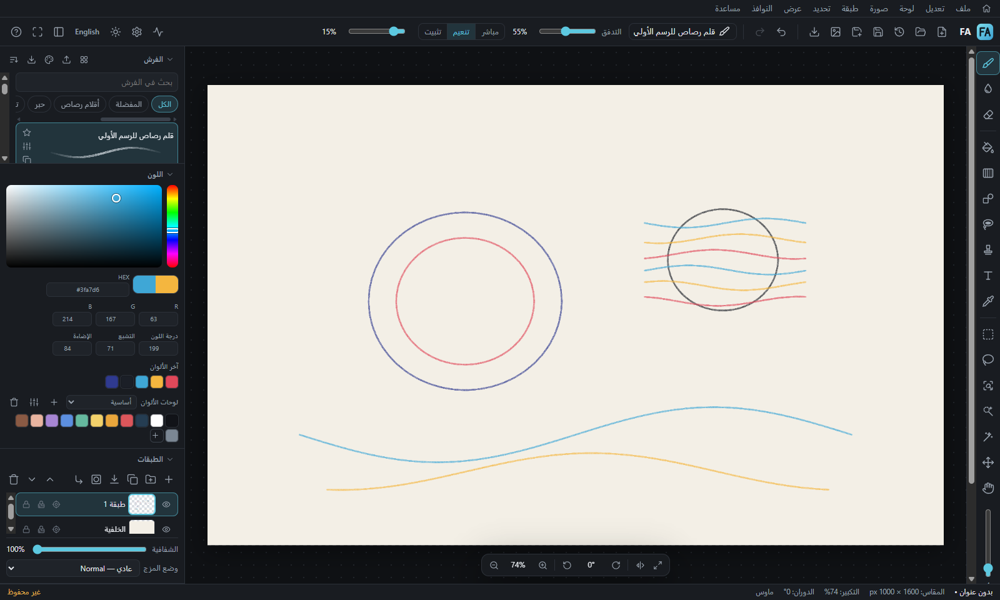

كل اللي تحتاجه عشان ترسم
FA مصنوع لشي واحد: إنك ترسم بالإحساس اللي تعودت عليه، بدون ما تحتاج ثلاث برامج.
فرشك تنتقل معك
استورد فرش فوتوشوب (ABR) وProcreate وClip Studio، وكمان فرش Clip Studio المثبّتة على جهازك بضغطة وحدة. البرنامج يقول لك عن كل إعداد: انقل كما هو، أو تقريبي، أو غير مدعوم، فما فيه مفاجآت.
طبقات وPSD
طبقات ومجموعات وأقنعة وأوضاع مزج وطبقات تعديل. يفتح ويصدّر PSD، ويفتح ملفات Clip Studio.
تحديد ذكي بنقرة
انقر على أي شي في رسمتك ويتحدد لحاله، حتى على الرسم الخطي. الذكاء الاصطناعي يشتغل على جهازك.
Liquify حسب الوجه
كبّر العيون، عدّل الأنف والفم وشكل الوجه بسلايدرات. ولوجوه الأنمي تحط النقاط بيدك.
مسوّى للقلم
ضغط وميلان ودوران القلم، ومساطر منظور، وتماثل، ونص عربي من اليمين لليسار.
التثبيت
دقيقة وحدة. الخطوة الثالثة هي الوحيدة اللي تحتاج انتباه.
نزّل الملف
اضغط زر التنزيل فوق، بينزل لك FA-Beta-Setup-1.15.0-beta.1.exe.
افتحه
من مجلد التنزيلات، دبل كليك على الملف.
تخطَّ رسالة ويندوز الزرقاء
البرنامج جديد ولسا ما عنده توقيع رسمي من مايكروسوفت، فويندوز يحذّرك. اضغط More info وبعدها Run anyway.
كمّل التثبيت وارسم
بيطلع لك اختصار FA Beta على سطح المكتب.
More info
اضغط More info، وبعدها يطلع لك زر Run anyway.
رسوماتك تبقى عندك
رسوماتك وإعداداتك وفرشك تنحفظ على جهازك بس، وما ينرفع شي لأي مكان. البرنامج ما يتصل بالإنترنت إلا لشيين:
- تنزيل نموذج الذكاء الاصطناعي أول مرة تستخدم التحديد الذكي أو Liquify حسب الوجه.
- يشوف إذا فيه تحديث جديد. وما يثبّت شي إلا لما يسألك: «فيه تحديث جديد، تثبّته الحين؟»
لو صار خطأ
نسخة تجريبية، فاحفظ شغلك كثير (Ctrl+S). ولو صار شي غلط:
- من قائمة مساعدة اختر نسخ معلومات الجهاز والصقها في رسالة.
- من نفس القائمة اختر فتح مجلد تقارير الأخطاء وأرسل آخر ملف.
- اكتب وش كنت تسوي قبل الخطأ بالضبط.